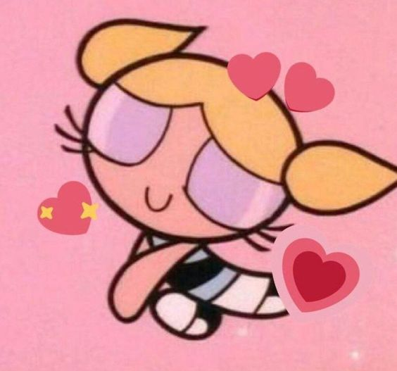
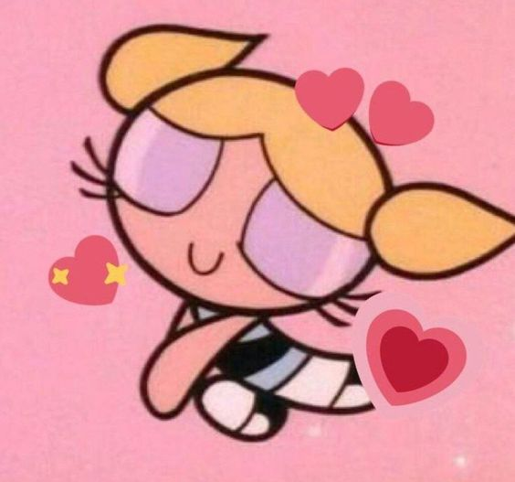

Feliz Aniversário
Oi minha linda, espero que curta seu aniversário
Da play linda xerosa🤍
Da play linda xerosa🤍
vc aqui kkkkkkkk


Bom minha linda não sou muito bom com textos mas vamo lá
Parabéns Gostosa
Essa feia também te dar parabéns.
Ta vendo essa foto, então ela matou os gatos dela
pra fazer esse bolo e depois comeu.
É essa sua idola? parabéns Ana Paula, parabéns.
Feliz seu dia minha linda, espero que seu dia seja bem gostoso
e leve, e que se divirta mesmo não gostando de comemorar.
Saiba que te amo e que quero você pra sempre. Sei que pensa
em muitas coisas e que algumas delas são ruins e pessimistas,
sei também que pensa que só vai ser alguém quando passar na unb
ou quando se formar e tiver ganhando seus 50k, mas não.
VOCÊ É ALGUÉM AGORA.
Aproveite sua vida, sorria mais, se preocupe menos, sinta
menos vergonha e pare de pensar no que os outros vão pensar
de você. Eu entendo que você não ver o valor na sua própria
vida, então procure e encontre seu próprio valor e motivo
pra viver, porque apesar de tudo que possa acontecer, você
tem que viver, não só por você mas também pelas pessoas que
amam você.
ENTÃO VIVA!
Tente viver a vida sem arrependimentos, pense que daqui 10
anos vai querer lembrar das coisas que fez e querer sentir
o mínimo de arrependimento possível. Quero que aprendar a
não ligar muito para o que as pessoas podem pensar de você,
sei que você fala que não liga, mas no fundo eu sei que
ainda liga mesmo que seja um pouquinho, mas queria que
percebesse que isso no final não importa. Sei que seus
pensamentos deixam as coisa mais difíceis de vez em quando e
também sei que você me acha muito simplista sobre como eu
vejo as coisas e que não ligo ou que não me
afetam, mas não é bem assim, existem coisas que você não têm
controle, e a única coisa que pode controlar é como vai
reagir a isso. Sei que me acha chato quando começo a falar
disso, mas eu só quero que perceba o quanto antes o que
realmente importa pra você, não quero te ensinar nada, só
tento fazer você ver as coisas com outros olhos,
principalmente não com pessimismo. Então viva, Ana, viva
sua vida, porque eu realmente amo você e gostaria de aproveitar
as coisas boas que a vida tem pra oferecer junto com você.
Eu te amo.

Eu sei vai dar errado
a gente fica longe
e volta a namorar depois...
a gente fica longe
e volta a namorar depois...
Enfim vida, eu acho que a felicidade não é sobre alcançar os seus objetivos,
se você não tiver satisfeita com o que você tem agora, você jamais
será feliz. Olha ao seu redor, temos um namoro feliz, uma vida
tranquila sem grandes perrengues, nos divertimos finais de semana
enquanto não temos nossa própria casa. Daqui uns anos quando
você conquistar seus objetivos, você vai olhar pra trás sentir um
vazio e pensar: Como eu queria voltar pra aqueles bons e velhos
tempos. Então é hora de você deixar o passado de lado, aceitar o
presente e sorrir para o futuro.
tudo que existe é o agora :)